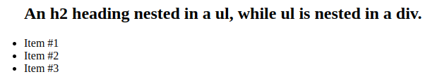
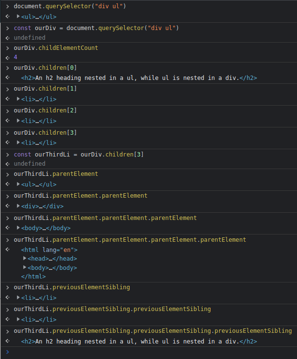

Parent, Child and Sibling
We can access a relative element in perspective of the initial element we
call on.

We can use:
- childElementCount (number of children)
- children[] (Access specific child element)
- parentElement (Access parent element)
- previousElementSibling (based on current child)
- nextElementSibling (based on current child)

nextSibling and previousSibling WILL RETURN THE NEXT NODE.(Many times
text, since JS usually uses a whitespace between elements.)